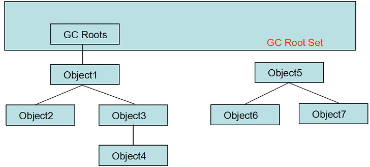

<!DOCTYPE html>
<html lang="en">
<head>
    <meta charset="utf-8">
    
    <title>对象是否存活 | YingLong</title>
    
    
        <meta name="keywords" content="JVM">
    
    <meta name="viewport" content="width=device-width, initial-scale=1, maximum-scale=1">
    <meta name="description" content="Java与C++之间有一堵由内存动态分配和垃圾收集技术所围成的“高墙”，墙外面的人想进去，墙里面的人想出来。 了解GC和内存非配的目的是：当需要排查各种内存溢出、内存泄露问题时，当垃圾收集成为系统达到更高并发量的瓶颈时，为了更好的对这些自动化技术实施必要的监控和调节。 程序计数器、虚拟机栈、本地方法栈这三个区域是线程私">
<meta name="keywords" content="JVM">
<meta property="og:type" content="article">
<meta property="og:title" content="对象是否存活">
<meta property="og:url" content="https://yaoyinglong.github.io/Blog/Java/VM/对象是否存活/index.html">
<meta property="og:site_name" content="YingLong">
<meta property="og:description" content="Java与C++之间有一堵由内存动态分配和垃圾收集技术所围成的“高墙”，墙外面的人想进去，墙里面的人想出来。 了解GC和内存非配的目的是：当需要排查各种内存溢出、内存泄露问题时，当垃圾收集成为系统达到更高并发量的瓶颈时，为了更好的对这些自动化技术实施必要的监控和调节。 程序计数器、虚拟机栈、本地方法栈这三个区域是线程私有的方法结束或线程结束内存就跟着回收了；但在堆和方法区中，一个接口中的多个实现类">
<meta property="og:locale" content="en">
<meta property="og:image" content="https://yaoyinglong.github.io/images/可达性分析算法判断对象是否可回收.png">
<meta property="og:updated_time" content="2019-06-27T09:26:09.583Z">
<meta name="twitter:card" content="summary">
<meta name="twitter:title" content="对象是否存活">
<meta name="twitter:description" content="Java与C++之间有一堵由内存动态分配和垃圾收集技术所围成的“高墙”，墙外面的人想进去，墙里面的人想出来。 了解GC和内存非配的目的是：当需要排查各种内存溢出、内存泄露问题时，当垃圾收集成为系统达到更高并发量的瓶颈时，为了更好的对这些自动化技术实施必要的监控和调节。 程序计数器、虚拟机栈、本地方法栈这三个区域是线程私有的方法结束或线程结束内存就跟着回收了；但在堆和方法区中，一个接口中的多个实现类">
<meta name="twitter:image" content="https://yaoyinglong.github.io/images/可达性分析算法判断对象是否可回收.png">
    

    

    
        <link rel="icon" href="/favicon.ico">
    

    <link rel="stylesheet" href="/libs/font-awesome/css/font-awesome.min.css">
    <link rel="stylesheet" href="/libs/open-sans/styles.css">
    <link rel="stylesheet" href="/libs/source-code-pro/styles.css">

    <link rel="stylesheet" href="/css/style.css">
    <script src="/libs/jquery/2.1.3/jquery.min.js"></script>
    <script src="/libs/jquery/plugins/cookie/1.4.1/jquery.cookie.js"></script>
    
    
        <link rel="stylesheet" href="/libs/lightgallery/css/lightgallery.min.css">
    
    
        <link rel="stylesheet" href="/libs/justified-gallery/justifiedGallery.min.css">
    
    
    
    


</head>
</html>
<body>
    <div id="container">
        <header id="header">
    <div id="header-main" class="header-inner">
        <div class="outer">
            <a href="/" id="logo">
                <i class="logo"></i>
                <span class="site-title">YingLong</span>
            </a>
            <nav id="main-nav">
                
                    <a class="main-nav-link" href="/">Home</a>
                
                    <a class="main-nav-link" href="/archives">Archives</a>
                
                    <a class="main-nav-link" href="/categories">Categories</a>
                
                    <a class="main-nav-link" href="/tags">Tags</a>
                
                    <a class="main-nav-link" href="/about">About</a>
                
            </nav>
            
            <div id="search-form-wrap">

    <form class="search-form">
        <input type="text" class="ins-search-input search-form-input" placeholder="Search">
        <button type="submit" class="search-form-submit"></button>
    </form>
    <div class="ins-search">
    <div class="ins-search-mask"></div>
    <div class="ins-search-container">
        <div class="ins-input-wrapper">
            <input type="text" class="ins-search-input" placeholder="Type something...">
            <span class="ins-close ins-selectable"><i class="fa fa-times-circle"></i></span>
        </div>
        <div class="ins-section-wrapper">
            <div class="ins-section-container"></div>
        </div>
    </div>
</div>
<script>
(function (window) {
    var INSIGHT_CONFIG = {
        TRANSLATION: {
            POSTS: 'Posts',
            PAGES: 'Pages',
            CATEGORIES: 'Categories',
            TAGS: 'Tags',
            UNTITLED: '(Untitled)',
        },
        ROOT_URL: '/',
        CONTENT_URL: '/content.json',
    };
    window.INSIGHT_CONFIG = INSIGHT_CONFIG;
})(window);
</script>
<script src="/js/insight.js"></script>

</div>
        </div>
    </div>
    <div id="main-nav-mobile" class="header-sub header-inner">
        <table class="menu outer">
            <tr>
                
                    <td><a class="main-nav-link" href="/">Home</a></td>
                
                    <td><a class="main-nav-link" href="/archives">Archives</a></td>
                
                    <td><a class="main-nav-link" href="/categories">Categories</a></td>
                
                    <td><a class="main-nav-link" href="/tags">Tags</a></td>
                
                    <td><a class="main-nav-link" href="/about">About</a></td>
                
                <td>
                    
    <div class="search-form">
        <input type="text" class="ins-search-input search-form-input" placeholder="Search">
    </div>

                </td>
            </tr>
        </table>
    </div>
</header>

        <div class="outer">
            
            
                <aside id="sidebar">
   
        
    <div class="widget-wrap" id="categories">
        <h3 class="widget-title">
            <span>categories</span>
            &nbsp;
            <a id="allExpand" href="#">
                <i class="fa fa-angle-double-down fa-2x"></i>
            </a>
        </h3>
        
        
        
         <ul class="unstyled" id="tree"> 
                    <li class="directory">
                        <a href="#" data-role="directory">
                            <i class="fa fa-folder"></i>
                            &nbsp;
                            DB
                        </a>
                         <ul class="unstyled" id="tree">  <li class="file"><a href="/Blog/DB/MySQL/">MySQL常用总结</a></li>  </ul> 
                    </li> 
                    
                    <li class="directory">
                        <a href="#" data-role="directory">
                            <i class="fa fa-folder"></i>
                            &nbsp;
                            Git
                        </a>
                         <ul class="unstyled" id="tree">  <li class="file"><a href="/Blog/Git/GIt常用命令/">Git常用命令</a></li>  <li class="file"><a href="/Blog/Git/GIt基本概念/">Git基本概念</a></li>  <li class="file"><a href="/Blog/Git/分支管理理解/">分支管理理解</a></li>  </ul> 
                    </li> 
                    
                    <li class="directory open">
                        <a href="#" data-role="directory">
                            <i class="fa fa-folder-open"></i>
                            &nbsp;
                            Java
                        </a>
                         <ul class="unstyled" id="tree"> 
                    <li class="directory open">
                        <a href="#" data-role="directory">
                            <i class="fa fa-folder-open"></i>
                            &nbsp;
                            VM
                        </a>
                         <ul class="unstyled" id="tree">  <li class="file"><a href="/Blog/Java/VM/HotSpot收集算法实现/">HotSpot收集算法实现</a></li>  <li class="file"><a href="/Blog/Java/VM/JVM内存池/">JVM内存池</a></li>  <li class="file"><a href="/Blog/Java/VM/内存非配与回收策略/">内存分配与回收策略</a></li>  <li class="file"><a href="/Blog/Java/VM/Java内存区域/">Java内存区域</a></li>  <li class="file"><a href="/Blog/Java/VM/Minor&Major&Full GC/">Minor&Major&Full GC</a></li>  <li class="file"><a href="/Blog/Java/VM/堆中对象分配&布局&访问/">堆中对象分配&布局&访问</a></li>  <li class="file"><a href="/Blog/Java/VM/OutOfMemoryError异常/">OOM异常实验</a></li>  <li class="file active"><a href="/Blog/Java/VM/对象是否存活/">对象是否存活</a></li>  <li class="file"><a href="/Blog/Java/VM/方法调用/">方法调用</a></li>  <li class="file"><a href="/Blog/Java/VM/类加载的时机/">类加载的时机</a></li>  <li class="file"><a href="/Blog/Java/VM/运行时栈帧结构/">运行时栈帧结构</a></li>  <li class="file"><a href="/Blog/Java/VM/垃圾收集算法/">垃圾收集算法</a></li>  <li class="file"><a href="/Blog/Java/VM/垃圾收集器/">垃圾收集器</a></li>  <li class="file"><a href="/Blog/Java/VM/字节码指令/">字节码指令</a></li>  <li class="file"><a href="/Blog/Java/VM/类加载器/">类加载器</a></li>  <li class="file"><a href="/Blog/Java/VM/理解GC日志/">理解GC日志</a></li>  <li class="file"><a href="/Blog/Java/VM/Class文件结构/">Class文件结构</a></li>  <li class="file"><a href="/Blog/Java/VM/属性表集合/">属性表集合</a></li>  <li class="file"><a href="/Blog/Java/VM/类加载过程/">类加载过程</a></li>  </ul> 
                    </li> 
                    
                    <li class="directory">
                        <a href="#" data-role="directory">
                            <i class="fa fa-folder"></i>
                            &nbsp;
                            基础
                        </a>
                         <ul class="unstyled" id="tree">  <li class="file"><a href="/Blog/Java/基础/lambda常用总结/">lambda常用总结</a></li>  <li class="file"><a href="/Blog/Java/基础/时间及日期总结/">Java8时间及日期</a></li>  </ul> 
                    </li> 
                    
                    <li class="directory">
                        <a href="#" data-role="directory">
                            <i class="fa fa-folder"></i>
                            &nbsp;
                            多线程
                        </a>
                         <ul class="unstyled" id="tree">  <li class="file"><a href="/Blog/Java/多线程/原子性、可见性、有序性/">原子性、可见性、有序性</a></li>  <li class="file"><a href="/Blog/Java/多线程/线程安全/">线程安全</a></li>  <li class="file"><a href="/Blog/Java/多线程/线程安全实现方式/">线程安全实现方式</a></li>  </ul> 
                    </li> 
                     </ul> 
                    </li> 
                    
                    <li class="directory">
                        <a href="#" data-role="directory">
                            <i class="fa fa-folder"></i>
                            &nbsp;
                            Linux
                        </a>
                         <ul class="unstyled" id="tree">  <li class="file"><a href="/Blog/Linux/Linux常用命令/">Linux常用命令</a></li>  <li class="file"><a href="/Blog/Linux/Linux常用技巧/">Linux常用技巧</a></li>  </ul> 
                    </li> 
                    
                    <li class="directory">
                        <a href="#" data-role="directory">
                            <i class="fa fa-folder"></i>
                            &nbsp;
                            Maven
                        </a>
                         <ul class="unstyled" id="tree">  <li class="file"><a href="/Blog/Maven/Maven属性/">Maven属性</a></li>  <li class="file"><a href="/Blog/Maven/Maven基础/">Maven基础</a></li>  <li class="file"><a href="/Blog/Maven/Maven常用/">Maven常用</a></li>  <li class="file"><a href="/Blog/Maven/Maven常用工具/">Maven常用工具</a></li>  <li class="file"><a href="/Blog/Maven/Maven插件编写/">Maven插件编写</a></li>  <li class="file"><a href="/Blog/Maven/Maven生命周期/">Maven生命周期</a></li>  <li class="file"><a href="/Blog/Maven/Maven仓库/">Maven仓库</a></li>  <li class="file"><a href="/Blog/Maven/Maven插件基础/">Maven插件基础</a></li>  <li class="file"><a href="/Blog/Maven/Maven常用插件/">Maven常用插件</a></li>  <li class="file"><a href="/Blog/Maven/Maven聚合与继承/">Maven聚合与继承</a></li>  <li class="file"><a href="/Blog/Maven/Maven标签全解/">Maven标签全解</a></li>  </ul> 
                    </li> 
                    
                    <li class="directory">
                        <a href="#" data-role="directory">
                            <i class="fa fa-folder"></i>
                            &nbsp;
                            Test
                        </a>
                         <ul class="unstyled" id="tree">  <li class="file"><a href="/Blog/Test/IT测试总结/">IT测试总结</a></li>  <li class="file"><a href="/Blog/Test/JMeter日常总结/">JMeter日常总结</a></li>  <li class="file"><a href="/Blog/Test/LoadRunner日常总结/">LoadRunner日常总结</a></li>  <li class="file"><a href="/Blog/Test/UT测试总结/">UT测试总结</a></li>  </ul> 
                    </li> 
                    
                    <li class="directory">
                        <a href="#" data-role="directory">
                            <i class="fa fa-folder"></i>
                            &nbsp;
                            协议族
                        </a>
                         <ul class="unstyled" id="tree">  <li class="file"><a href="/Blog/协议族/以太网/">以太网</a></li>  <li class="file"><a href="/Blog/协议族/地址解析协议/">地址解析协议ARP</a></li>  <li class="file"><a href="/Blog/协议族/网络基础知识/">网络基础知识</a></li>  <li class="file"><a href="/Blog/协议族/TCPIP四层&五层模型/">TCP/IP四层&五层模型</a></li>  </ul> 
                    </li> 
                    
                    <li class="directory">
                        <a href="#" data-role="directory">
                            <i class="fa fa-folder"></i>
                            &nbsp;
                            杂记
                        </a>
                         <ul class="unstyled" id="tree">  <li class="file"><a href="/Blog/杂记/IDEA常用插件/">IDEA常用插件</a></li>  <li class="file"><a href="/Blog/杂记/IDEA快捷的使用/">IDEA的快捷使用</a></li>  <li class="file"><a href="/Blog/杂记/XSD使用总结/">XSD实用总结</a></li>  <li class="file"><a href="/Blog/杂记/SonarQube配置总结/">SonarQube配置总结</a></li>  <li class="file"><a href="/Blog/杂记/Arthas诊断工具/">Arthas诊断工具</a></li>  </ul> 
                    </li> 
                    
                    <li class="directory">
                        <a href="#" data-role="directory">
                            <i class="fa fa-folder"></i>
                            &nbsp;
                            框架
                        </a>
                         <ul class="unstyled" id="tree"> 
                    <li class="directory">
                        <a href="#" data-role="directory">
                            <i class="fa fa-folder"></i>
                            &nbsp;
                            Spring
                        </a>
                         <ul class="unstyled" id="tree">  <li class="file"><a href="/Blog/框架/Spring/Spring Gzip压缩/">Spring Gzip压缩</a></li>  <li class="file"><a href="/Blog/框架/Spring/SpringMvc异步/">SpringMvc异步原理及实现</a></li>  <li class="file"><a href="/Blog/框架/Spring/Hystrix总结/">Hystrix总结</a></li>  </ul> 
                    </li> 
                     <li class="file"><a href="/Blog/框架/Redis分布式锁实现/">Redis分布式锁实现</a></li>  <li class="file"><a href="/Blog/框架/Tomcat工作原理/">Tomcat工作原理</a></li>  </ul> 
                    </li> 
                     <li class="file"><a href="/Blog/index/">Welcome YingLong's Blog</a></li>  </ul> 
    </div>
    <script>
        $(document).ready(function() {
            var iconFolderOpenClass  = 'fa-folder-open';
            var iconFolderCloseClass = 'fa-folder';
            var iconAllExpandClass = 'fa-angle-double-down';
            var iconAllPackClass = 'fa-angle-double-up';
            // Handle directory-tree expansion:
            // 左键单独展开目录
            $(document).on('click', '#categories a[data-role="directory"]', function (event) {
                event.preventDefault();

                var icon = $(this).children('.fa');
                var expanded = icon.hasClass(iconFolderOpenClass);
                var subtree = $(this).siblings('ul');
                icon.removeClass(iconFolderOpenClass).removeClass(iconFolderCloseClass);
                if (expanded) {
                    if (typeof subtree != 'undefined') {
                        subtree.slideUp({ duration: 100 });
                    }
                    icon.addClass(iconFolderCloseClass);
                } else {
                    if (typeof subtree != 'undefined') {
                        subtree.slideDown({ duration: 100 });
                    }
                    icon.addClass(iconFolderOpenClass);
                }
            });
            // 右键展开下属所有目录
            $('#categories a[data-role="directory"]').bind("contextmenu", function(event){
                event.preventDefault();
                
                var icon = $(this).children('.fa');
                var expanded = icon.hasClass(iconFolderOpenClass);
                var listNode = $(this).siblings('ul');
                var subtrees = $.merge(listNode.find('li ul'), listNode);
                var icons = $.merge(listNode.find('.fa'), icon);
                icons.removeClass(iconFolderOpenClass).removeClass(iconFolderCloseClass);
                if(expanded) {
                    subtrees.slideUp({ duration: 100 });
                    icons.addClass(iconFolderCloseClass);
                } else {
                    subtrees.slideDown({ duration: 100 });
                    icons.addClass(iconFolderOpenClass);
                }
            })
            // 展开关闭所有目录按钮
            $(document).on('click', '#allExpand', function (event) {
                event.preventDefault();
                
                var icon = $(this).children('.fa');
                var expanded = icon.hasClass(iconAllExpandClass);
                icon.removeClass(iconAllExpandClass).removeClass(iconAllPackClass);
                if(expanded) {
                    $('#sidebar .fa.fa-folder').removeClass('fa-folder').addClass('fa-folder-open')
                    $('#categories li ul').slideDown({ duration: 100 });
                    icon.addClass(iconAllPackClass);
                } else {
                    $('#sidebar .fa.fa-folder-open').removeClass('fa-folder-open').addClass('fa-folder')
                    $('#categories li ul').slideUp({ duration: 100 });
                    icon.addClass(iconAllExpandClass);
                }
            });  
        });
    </script>

    
    <div id="toTop" class="fa fa-angle-up"></div>
</aside>
            
            <section id="main"><article id="post-Java/VM/对象是否存活" class="article article-type-post" itemscope itemprop="blogPost">
    <div class="article-inner">
        
        
            <header class="article-header">
                
                    <div class="article-meta">
                        
    <div class="article-category">
    	<i class="fa fa-folder"></i>
        <a class="article-category-link" href="/categories/Java/">Java</a><i class="fa fa-angle-right"></i><a class="article-category-link" href="/categories/Java/VM/">VM</a>
    </div>

                        
    <div class="article-tag">
        <i class="fa fa-tag"></i>
        <a class="tag-link" href="/tags/JVM/">JVM</a>
    </div>

                        
    <div class="article-date">
        <i class="fa fa-calendar"></i>
        <a href="/Blog/Java/VM/对象是否存活/">
            <time datetime="2017-12-31T16:00:00.000Z" itemprop="datePublished">2018-01-01</time>
        </a>
    </div>


                        
                    </div>
                
                
    
        <h1 class="article-title" itemprop="name">
            对象是否存活
        </h1>
    

            </header>
        
        
        <div class="article-entry" itemprop="articleBody">
        
        
            
        
        
            <p><strong>Java与C++之间有一堵由内存动态分配和垃圾收集技术所围成的“高墙”，墙外面的人想进去，墙里面的人想出来。</strong></p>
<p><strong>了解GC和内存非配的目的</strong>是：当需要排查各种内存溢出、内存泄露问题时，当垃圾收集成为系统达到更高并发量的瓶颈时，为了更好的对这些自动化技术实施必要的监控和调节。</p>
<p><strong>程序计数器、虚拟机栈、本地方法栈</strong>这三个区域是线程私有的方法结束或线程结束内存就跟着回收了；但在堆和方法区中，一个接口中的多个实现类需要的内存可能不一样，一个方法中的多个分支需要的内存也可能不一样，只有在程序处于<strong>运行期间</strong>才会知道会创建哪些对象，这部分的内存是动态的，也是垃圾收集器所关注的。</p>
<p>堆里面存放了几乎所有的对象实例，垃圾收集器在对堆进行回收前，首先<strong>确定对象是否存活（是否还有可能再被任何途径使用）</strong>。而判断对象是否存活的算法有<strong>引用计数算法</strong>和<strong>可达性分析算法</strong>两种，但目前主流的实现是通过<strong>可达性分析</strong>来判断对象是否存活的。</p>
<h3 id="引用计数算法"><a href="#引用计数算法" class="headerlink" title="引用计数算法"></a>引用计数算法</h3><p>给对象中添加一个引用计数器，每当有一个地方引用它时，计数器值就加1；当引用失效时，计数器值就减1；任何时刻计数器值为0的对象就是不可能再被使用的。</p>
<p>引用计数算法<strong>实现简单，判定效率很高</strong>，在大部分情况下它都是一个不错的算法，Python就是是使用的引用计数算法进行的内存管理。但是主流的Java虚拟机里面没有选用引用计数算法来管理内存，其中最主要的原因是它很难解决<strong>对象之间相互引用</strong>的问题。</p>
<h3 id="可达性分析算法"><a href="#可达性分析算法" class="headerlink" title="可达性分析算法"></a>可达性分析算法</h3><p>通过一系列的<strong>称为GC Roots的对象</strong>作为起始点，从这些节点开始向下搜索，搜索所走过的路径称为<strong>引用链</strong>，当一个对象到GC Roots没有任何引用链相连时，则证明此对象时不可用的。</p>
<p></p>
<p>在Java中可作为<strong>GC Roots</strong>的对象包括下面几种：</p>
<ul>
<li>虚拟机栈（栈帧中的<strong>局部变量表</strong>）中引用的对象。</li>
<li>方法区中<strong>类静态属性</strong>引用的对象。</li>
<li>方法区中<strong>常量</strong>引用的对象。</li>
<li>本地方法栈中<strong>JNI（本地方法）</strong>引用的对象。</li>
</ul>
<h3 id="引用"><a href="#引用" class="headerlink" title="引用"></a>引用</h3><p>无论时通过引用计数算法还是通过可达性分析算法判断对象是否存<strong>都与引用有关</strong>。</p>
<p>在<strong>JDK 1.2以前</strong>，如果reference类型的数据中存储的数值代表的是另外一块内存的起始地址，就称这块内存代表着一个引用；在<strong>JDK 1.2之后</strong>，Java对引用的概念进行了扩充，将引用分为<strong>强引用、软引用、弱引用、虚引用</strong>4种，这4种引用<strong>强度依次逐渐减弱</strong>。</p>
<p><strong>强引用</strong>在程序代码中普遍存在的，类似<code>Object obj = new Object()</code>这类的引用，<strong>只要强引用还存在，垃圾收集器永远不会回收掉被引用的对象</strong>。</p>
<p><strong>软引用</strong>是用来描述一些<strong>还有用但并非必要</strong>的对象。软引用关联着的对象，在系统将要发送内存溢出异常之前，将会把这些对象列进回收范围之中进行二次回收。JDK提供了<strong>SoftReference类</strong>来实现软引用。</p>
<p><strong>弱引用</strong>也是用来描述<strong>非必要</strong>对象，且<strong>比软引用更弱</strong>，被弱引用关联的对象<strong>只能生存到下一次垃圾收集发生之前</strong>。JDK提供了<strong>WeakReference类</strong>来实现弱引用。</p>
<p><strong>虚引用</strong>最弱的一种引用关系，也被称为<strong>幽灵引用</strong>或<strong>幻影引用</strong>。一个对象是否有虚引用存在<strong>完全不影响其生存时间</strong>，也<strong>无法通过虚引用来获取对象的实例</strong>。为一个对象设置虚引用关联的<strong>唯一目</strong>的是能在这个对象<strong>被收集器回收时收到一个系统通知</strong>。JDK提供了<strong>Phantomeference类</strong>来实现虚引用。</p>
<h3 id="finalize方法"><a href="#finalize方法" class="headerlink" title="finalize方法"></a>finalize方法</h3><p>即使对象不可达，也<strong>并非立即将该对象GC掉</strong>，真正宣告一个对象死亡<strong>至少需要经历两次<a href="../垃圾收集算法">标记</a>过程</strong>，若果对象在进行可达性分析后发现没有与GC Roots相连接的引用链，那它将会被第一次标记并且进行一次筛选，<strong>筛选条件是此对象是否有必要执行finalize()方法</strong>。</p>
<p>如果对象<strong>没有覆盖finalize()方法</strong>或者<strong>finalize()方法已经被虚拟机调用过了</strong>，虚拟机将这两种情况视为<strong>没有必要执行</strong>，那么在下一个回收周期对象将会被回收。</p>
<p>如果对象被判定为<strong>有必要执行finalize()方法</strong>，该对象会被放置在一个叫做<strong>F-Queue的队列</strong>中，并在稍后由一个虚拟机<strong>自动建立的、低优先级</strong>的<strong>Finalizer线程</strong>去执行。虚拟机会触发这个方法但是<strong>不会等待它运行结束</strong>，因为如果有的finalize()方法执行缓慢甚至发送死循环，很可能导致F-Queue队列中其他对象永远处于等待，从而导致整个内存回收系统奔溃。稍后GC将对F-Queue中的对象进行<strong>二次小规模标记</strong>，被二次标记的对象在下一个回收周期将会被回收。</p>
<p>如果对象在finalize()方法中<strong>重新与引用链上的任何对象建立关联</strong>，在二次标记时它将<strong>被移除即将回收</strong>的集合。且<strong>任何对象的finalize()方法只会被系统自动调用一次</strong>。</p>
<p>有很多地方说finalize()方法适合做<strong>关闭外部资源之类</strong>的工作，但是finalize()方法<strong>运行的代价高昂、不确定性大，无法保证各个对象的调用顺序</strong>。且finalize()方法能做的所有工作，使用try-finally或者其他方式都可以做到而且可以做得更好跟及时，所以<strong>尽量不要使用finalize()</strong>方法。</p>
<h3 id="回收方法区"><a href="#回收方法区" class="headerlink" title="回收方法区"></a>回收方法区</h3><p>很多人认为方法区（<strong>HotSpot中的永久代</strong>）没有垃圾收集，虚拟机规范中确实说过可以不要求虚拟机在方法区实现垃圾收集，且方法区垃圾收集性价比很低，是否对方法区进行垃圾收集HotSpot<strong>通过-Xnoclassgc参数</strong>来控制。</p>
<p>方法区的垃圾收集主要回收<strong>废弃的常量</strong>和<strong>无用的类</strong>两部分。<strong>回收废弃的常量与回收堆中的对象非常类似</strong>。判断一个类是否是无用的类的条件非常苛刻，需要同时满足下面3个条件：</p>
<ul>
<li><strong>该类所有的实例都已经被回收</strong>，也就是<strong>堆中不存在该类的任何实例</strong>。</li>
<li><strong>加载该类的ClassLoader已经被回收</strong>。</li>
<li><strong>该类对应的java.lang.Class对象没有在任何地方被引用，无法在任何地方通过反射访问该类的方法</strong>。</li>
</ul>
<p>通常在大量<strong>使用反射、动态代理、CGLib等ByteCode框架、动态生成JSP以及OSGi这类频繁自定义ClassLoader的场景</strong>需要虚拟机具备类卸载功能，以保证方法区不会溢出。</p>

            </div>
        
        <footer class="article-footer">
        </footer>
    </div>
</article>


    
<nav id="article-nav">
    
        <a href="/Blog/Java/VM/垃圾收集算法/" id="article-nav-newer" class="article-nav-link-wrap">
            <strong class="article-nav-caption">Newer</strong>
            <div class="article-nav-title">
                
                    垃圾收集算法
                
            </div>
        </a>
    
    
        <a href="/Blog/Java/VM/Java内存区域/" id="article-nav-older" class="article-nav-link-wrap">
            <strong class="article-nav-caption">Older</strong>
            <div class="article-nav-title">Java内存区域</div>
        </a>
    
</nav>


    
    


<!-- baidu url auto push script -->
<script type="text/javascript">
    !function(){var e=/([http|https]:\/\/[a-zA-Z0-9\_\.]+\.baidu\.com)/gi,r=window.location.href,o=document.referrer;if(!e.test(r)){var n="//api.share.baidu.com/s.gif";o?(n+="?r="+encodeURIComponent(document.referrer),r&&(n+="&l="+r)):r&&(n+="?l="+r);var t=new Image;t.src=n}}(window);
</script>     
</section>
        </div>
        <footer id="footer">
    <div class="outer">
        <div id="footer-info" class="inner">
            YaoYingLong &copy; 2019 
            <!-- <a rel="license" href="http://creativecommons.org/licenses/by-nc-nd/4.0/"></a> -->
            <br> Powered by <a href="http://hexo.io/" target="_blank" rel="external nofollow noopener noreferrer">Hexo</a>. Theme - <a href="https://github.com/zthxxx/hexo-theme-Wikitten" rel="external nofollow noopener noreferrer" target="_blank">wikitten</a>
        </div>
    </div>
</footer>
        

    
        <script src="/libs/lightgallery/js/lightgallery.min.js"></script>
        <script src="/libs/lightgallery/js/lg-thumbnail.min.js"></script>
        <script src="/libs/lightgallery/js/lg-pager.min.js"></script>
        <script src="/libs/lightgallery/js/lg-autoplay.min.js"></script>
        <script src="/libs/lightgallery/js/lg-fullscreen.min.js"></script>
        <script src="/libs/lightgallery/js/lg-zoom.min.js"></script>
        <script src="/libs/lightgallery/js/lg-hash.min.js"></script>
        <script src="/libs/lightgallery/js/lg-share.min.js"></script>
        <script src="/libs/lightgallery/js/lg-video.min.js"></script>
    
    
        <script src="/libs/justified-gallery/jquery.justifiedGallery.min.js"></script>
    
    
        <script type="text/x-mathjax-config">
    MathJax.Hub.Config({
        tex2jax: {
            inlineMath: [ ["$","$"], ["\\(","\\)"] ],
            skipTags: ['script', 'noscript', 'style', 'textarea', 'pre', 'code'],
            processEscapes: true,
            TeX: {
                equationNumbers: {
                  autoNumber: 'AMS'
                }
            }
        }
    });
    MathJax.Hub.Queue(function() {
        var all = MathJax.Hub.getAllJax();
        for (var i = 0; i < all.length; ++i)
            all[i].SourceElement().parentNode.className += ' has-jax';
    });
</script>
<script async src="//cdnjs.cloudflare.com/ajax/libs/mathjax/2.7.1/MathJax.js?config=TeX-AMS-MML_HTMLorMML"></script>
    


<!-- Custom Scripts -->
<script src="/js/main.js"></script>

    </div>
</body>
